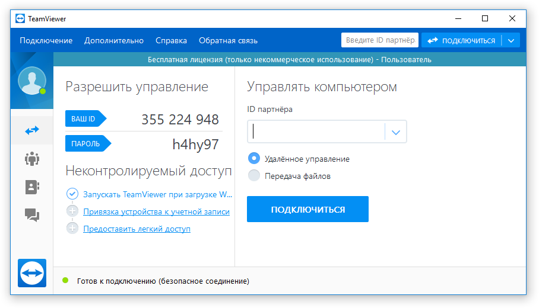

TeamViewer знаком многим из Вас как приложение для создания конференций, командного доступа и совместной работы. В своей деятельности компания-разработчик специализируется на технологиях, использующих облачные ресурсы, для оказания онлайн-поддержки и взаимодействия в реальном времени по всему миру.
Программа приобрела большую популярность и количество загрузок, если верить информации на их сайте, достигло 1 миллиарда!
Основные преимущества, которые позволили добиться таких высоких показателей, заключаются в следующем:
К минусам программы TeamViewer можно отнести необходимость начальной регистрации и ее высокую стоимость.